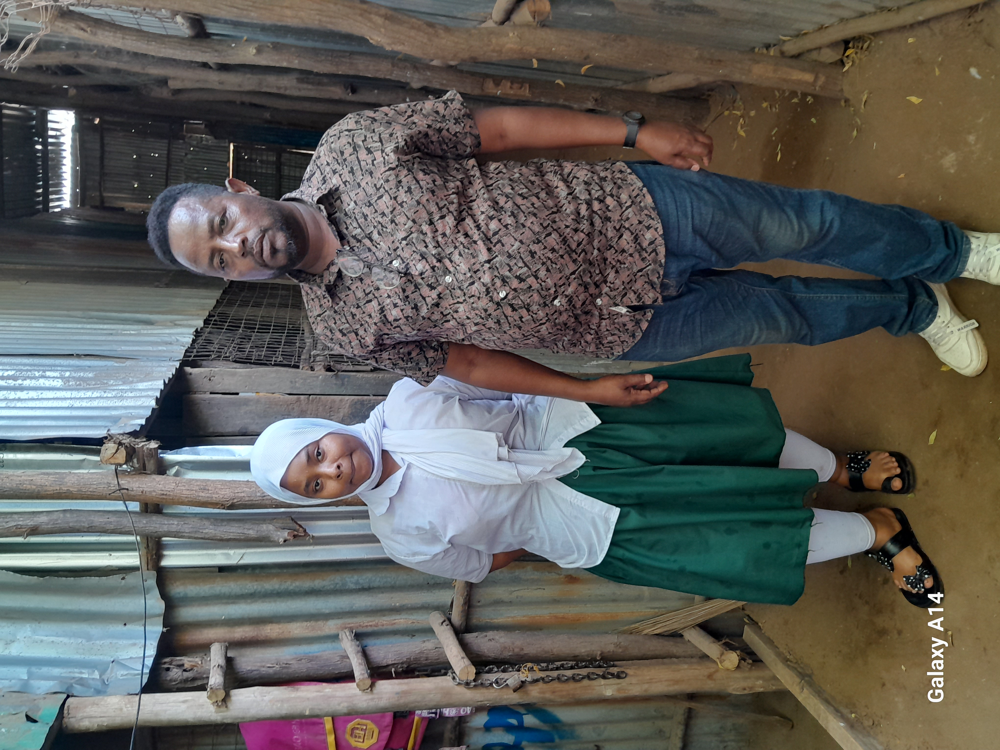

A Life Shaped by Conflict
Duressa Sakete’s life has been defined by hardship, displacement, and an unyielding determination to secure a better future for his children. Born in Ethiopia, he grew up in an environment of political turmoil and ethnic strife. As a young boy, he did not fully grasp the gravity of the conflicts around him. However, over time, he came to understand that his community was seen as a threat by the government, which accused them of supporting rebel groups fighting for greater political and social freedoms.
In his village, the government viewed Duressa’s ethnic group as sympathizers of the opposition. The authorities sought to suppress any dissent, often targeting entire communities with brutal force. As government forces intensified their crackdown, innocent families, including Duressa’s, found themselves caught in the crossfire. The fear of persecution became a daily reality, forcing many to flee their homes in search of safety.

“The government wanted to arrest my family and me because of our tribe’s alleged connection to the rebels,” Duressa recalls. The danger extended beyond arrests; military forces frequently raided villages suspected of harboring insurgents. These attacks resulted in tragic losses, with many of Duressa’s friends, relatives, and neighbors losing their lives in what he describes as senseless killings. The horror of witnessing such violence left an indelible mark on him.
Faced with imminent danger, Duressa and his family had no choice but to escape. Leaving their home was not an easy decision, but survival was their only priority. They abandoned everything—their land, possessions, and livelihoods—embarking on a perilous journey toward an uncertain future. Their only hope was to find a safe place where they could rebuild their lives away from the constant threat of violence.
Life in Kakuma Refugee Camp
In 2005, after months of planning and an arduous journey, Duressa and his family crossed the border into Kenya. They sought refuge in Kakuma Refugee Camp, a vast settlement housing thousands of displaced individuals from across East Africa. Though Kakuma provided relative safety, it was far from the stability and opportunities Duressa had envisioned. Life in the camp was filled with uncertainty and struggle.
“Kakuma was not what we expected. We had escaped violence, but here, survival was still a daily battle,” Duressa explains. The camp lacked basic resources, making it difficult to secure food, water, and medical care. Employment opportunities were scarce, and without work, providing for his family became an overwhelming challenge.
A Father’s Dream
Despite these obstacles, Duressa remains committed to ensuring that his children have the best chance at a better life. His dream is for them to leave the camp, pursue careers, and contribute to society in ways he never could. “I want them to have opportunities I never had. I want them to be able to stand on their own,” he says with determination.
Though he faces his own health struggles, including high blood pressure due to the constant stress of his situation, Duressa refuses to give up. He continues to fight for his family, holding onto the hope that one day, his children will live in a place where they can thrive. His story is one of resilience and unwavering love—a father’s relentless pursuit of a future filled with dignity and opportunity for his children.
Kakuma may be a place of hardship, but for Duressa, it is also a place where hope persists. “I may never return to Ethiopia, but as long as I am here, I will keep fighting for my children’s future,” he declares. His journey is not yet over, but his resolve remains strong. One day, he hopes his children will leave the refugee camp behind and step into a world where they can truly flourish.